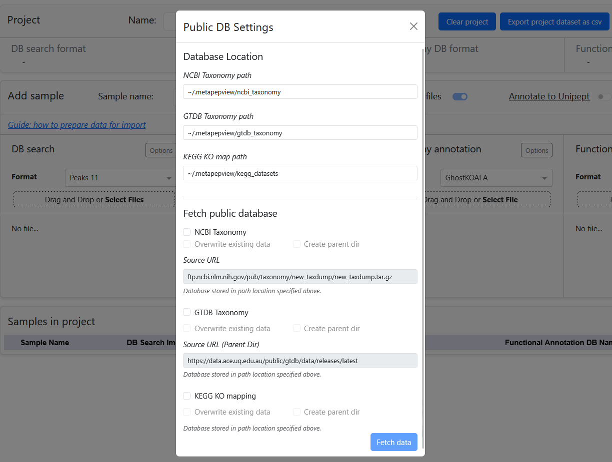
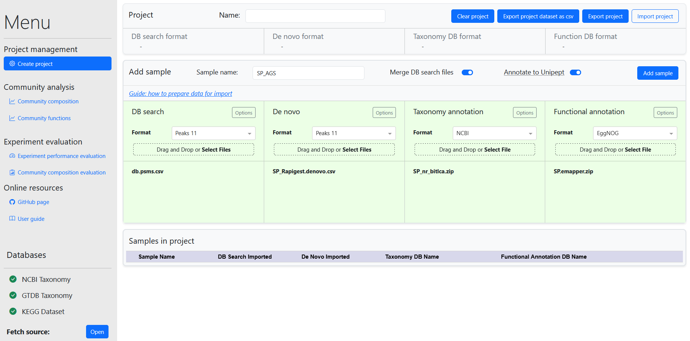

Getting started
When the meta-PepView server is running, the interface is accessed through the web browser from the URL: http://localhost:8050. When starting a new session, the dashboard will display the Create project page.
 Dashboard interface at startup
Dashboard interface at startup
The dashboard contains several modules for data management and visualization. These are accessed in the sidebar. The dashboard contains the following modules:
- Project management:
- Create project: Manage project data by importing samples from metaproteomics experiments.
- Community analysis:
- Community composition: Visualize community taxonomy composition across samples from the project table.
- Community functions: Visualize functional expression quantification across samples from the project table.
- Experiment evaluation:
- Experiment performance evaluation: Visualization toolbox for evaluation of metaproteomics experiment performance metrics, as well as benchmarking of experiments against an experiment reference dataset.
- Community composition evaluation: Compare community taxonomy composition from one sample between peptide annotation from local protein database matching and peptide sequence matching against Uniprot TrEMBL through the Unipept API.
Download public databases
For import of metaproteomics data and visualization of taxonomy and function groups, meta-PepView requires access to public taxonomy and function databases. These have to be downloaded from their sources. To infer lineages from taxonomy annotations and parse the taxonomy tree, the NCBI or GTDB taxonomy datasets are required (depending on the selected taxonomy annotation format). For visualization of function groups, the KEGG function mapping dataset has to be fetched online.
The presence status of public databases is shown at the bottom of the sidebar. From there, a menu can be accessed to automatically download the required datasets for processing and visualization in the dashboard.
Note
When downloading datasets, meta-PepView will create a directory .metapepview inside the user home directory. The directory path that meta-PepView will look for and write datasets can be changed on the top of the download menu. Note that meta-PepView will only create directories for each dataset when the user checks the Create parent dir boxes. Make sure to check these boxes when downloading the datasets for the first time.
 Public database download menu
Note
If meta-PepView is running inside a Docker container, downloaded databases will only persist during the lifetime of the container. To ensure that databases will be preserved across container instances, the storage directory can be mounted to a directory on the host computer or a volume using the -v flag when creating a new container:
docker run -p 8050:8050 -v "ref_db_volume:/home/.metapepview" metapepview
Create a new project
Once the public databases are imported, a new project can be created by importing metaproteomics datasets. A project contains all the data for community analysis and experiment evaluation. These are stored in two datasets:
- A "Performance evaluation dataset" that contains raw spectral data and peptide identification data (DB search, de novo) from a single metaproteomics experiment. This dataset is visualized in the experiment performance evaluation module.
- A "Compositions and functions dataset" that contains peptide identifications (DB search, de novo) with taxonomy and function annotations from multiple experiments. This dataset is visualized in the taxonomy and functional visualization modules.
New samples are added to a project by importing them in the "Data importers" field. Before importing data into a project, check out the Prepare input data section for supported data formats and sources, as well as instructions on how to obtain the data. Instructions to import samples into the project is provided in the Data import section.
 Import metaproteomics experiment data into a project